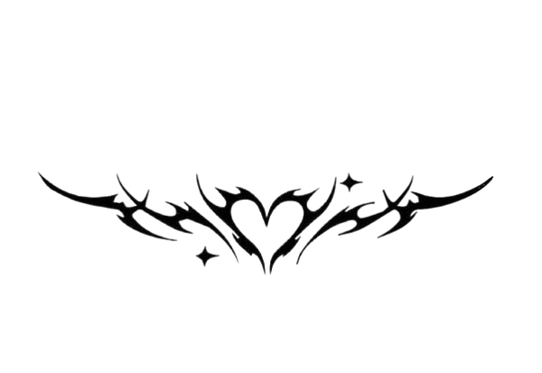

Rólunk

A Juicy Couture-t két barát alapította 1997-ben. Gela Nash és Pamela Skaist-Levy, mindketten a kaliforniai Pacoimában éltek, 1989-ben úgy döntöttek, hogy létrehozzák saját divatmárkájukat, a Travis Jeans-t, amely kismamanadrágokat árusított. 1996-ban megváltoztatták a nevet Juicy Couture-re. Minden Juicy Couture termék a cég jellegzetes logójával van ellátva : két skót terrier tartja a kezében egy három szívet ábrázoló pajzsot, valamint a Love P&G felirattal (Pamela és Gela emlékére). Tetején egy korona és egy Juicy Couture lobogó zászló található. Ezt követően a Juicy Couture márka többször is átdolgozta jellegzetes címkéjét, például a legismertebb, kutyákkal díszített, négyzet alakú címkét, valamint újabb címkéket is készített. A Juicy Couture több különböző színű címkével rendelkezik, amelyek a különböző ruhadaraboknak felelnek meg.